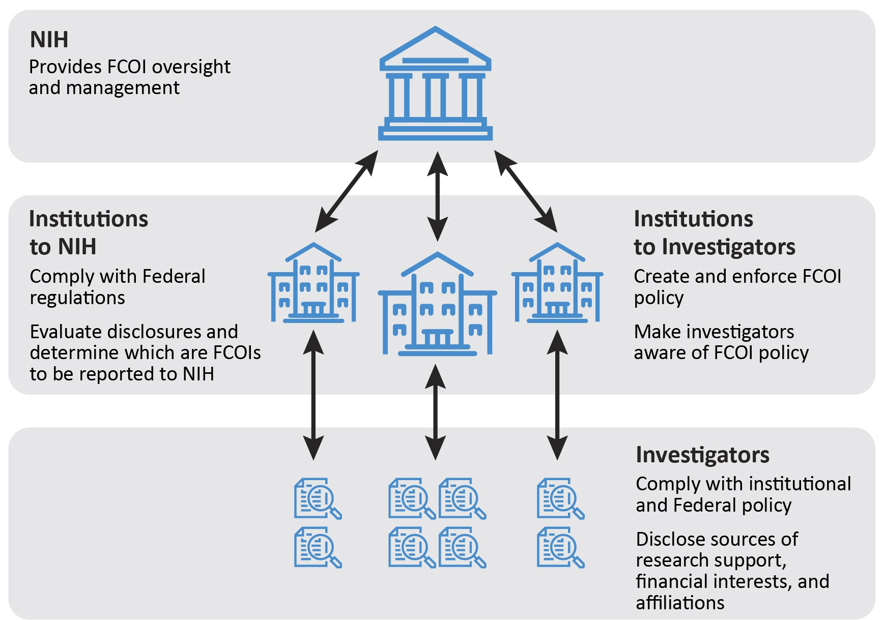

Foreign Influence in Research
Table of Contents
1. Reporting, Research Integrity, and Effective Practices to Manage Undue Foreign Influence Risk
1.1. Conflict of Interest (COI)
- Conflict of Interest
- Financial conflict of Interest (FCOI)
- Significant Financial Interest (SFI)
Institues have COI Requirements
- PHS (Public Health Services)
- NSF (National Science Foundation)
Other institutes may adopt policy from above institutes.

Figure 1: Responsibilities of Institutes and Researchers (Source: U.S. Department of Health and Human Services (HHS), Office of Inspector General (OIG))
1.2. Conflict of Commitment (COC)
COCs aren't yet properly regulated unlike COI. Federal regulation require institutions to have policies on FCOIs but not for COCs.
1.3. Foreign Components in a Research Project
- Involvement of Human subjects or animals at foreign location
- Foreign travel for data collection, survey, …
- Collaborations that might result in co-authorship
- Receipt of financial support from a foreign entity
1.4. Other Support
Any other support
- foreign or domestic
- monetary or not
- commitment of time, or equipment, … supporting the researcher's work
2. Principles of Research Integrity
- Use of honest and verifiable methods
- Adherence to rules, regulations, and guidelines
- Following professional codes and norms
aka Responsible Conduct of Research (RCR)
2.1. Violations and their Consequences
Violations include
- Failure to report
- Tranfer of IP
- Peer review transfers / leaks
3. Foreign Talent Recruitment Programs
They are not illegal. But some of them clash with the principles of research integrity and thus some federal agencies like DoE prohibit them for their employees.